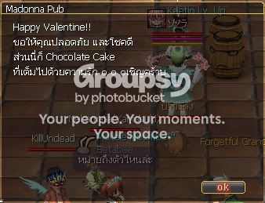

หน้า 87 จากทั้งหมด 276

โพสต์แล้ว:
จันทร์ 18 ก.พ. 2008 3:49 pmโดย ECO
ชาวนาช่วงนี้รายได้ตกเหลือเกิน มีอะไรพอจะทําเงินได้บ้างเฉพาะที่ชาวนาทําได้อาชีพเดียวนะ
โพสต์แล้ว:
จันทร์ 18 ก.พ. 2008 5:42 pmโดย ECO
ว่าจะทำภาพสกรีนช็อตเข้าร่วมประกวด แต่กังวลว่าคอนเซปต์จะไปตรงกับของใครมั้ย แล้วก็เริ่มขี้เกียจ ฮ้าว~
วันก่อนก็เกิดบ้าขึ้นมา เพราะจะสร้างริงขึ้นอีกริงไว้รับตัวสำรองของเพื่อนที่ไม่สามารถเข้าริงหลักได้เพราะมันเต็มแล้ว(ปกติริงหลักจะให้มีตัวอยู่ในริงได้ไม่เกิน3ตัว) ก็กลัวว่ารูปริงที่ใช้เอามาจากเวบหลักของญี่ปุ่นจะซ้ำ เลยไปนั่งเปิดไฟล์รูปริงดู ทำไมมันเยอะงี้- -...
โพสต์แล้ว:
จันทร์ 18 ก.พ. 2008 5:48 pmโดย ECO
ขอถามหน่อยคับ
คือว่า ชุด 55 ชาวนา
ผมมีแค่รองเท้า
อยากรู้ว่าส่วนอื่นหาจากไหนอ่ะคับ
โพสต์แล้ว:
จันทร์ 18 ก.พ. 2008 6:10 pmโดย ECO
ชุด55รู้สึกว่าต้องทำเควสยาท่านแม่ก่อนนิ มันถึงจะเปิดร้านให้ซื้อ...
ปล. จากเควสวาเลนไทน์ ทำให้ได้รู้ว่าทีมงานที่นี่ยังคงxxxไม่เปลี่ยนแปลง...

โพสต์แล้ว:
จันทร์ 18 ก.พ. 2008 6:11 pmโดย ECO
ลิ้งค์วิธีทำชุด 55 อยู่หน้าแรกค่ะ
โพสต์แล้ว:
จันทร์ 18 ก.พ. 2008 7:55 pmโดย ECO
ไอเจ้า วาซาบิ โห๊ดโหด T_T
Edit : มะกี้ตีได้ Soul Water มาได้ 1 อัน อ่ะครับ
อยากรู้ว่าเอาไปทำไรได้มั่งอ่ะครับ???
โพสต์แล้ว:
จันทร์ 18 ก.พ. 2008 8:18 pmโดย ECO
ใช้สกิลของนักแปรธาตุ เอ๊ย หลอมแร่ ทำให้เป็นHoly silverนิ...
โพสต์แล้ว:
จันทร์ 18 ก.พ. 2008 8:46 pmโดย ECO
jib001 เขียน:มะกี้ตีได้ Soul Water มาได้ 1 อัน อ่ะครับ
อยากรู้ว่าเอาไปทำไรได้มั่งอ่ะครับ???
Soul Harp พิณเวล 60 ของ Bard/Druid (
http://board.onenet.co.th/viewtopic.php?t=18899)
ชุดเวล 80 (เกราะอก) ของสาย Spell User
โพสต์แล้ว:
จันทร์ 18 ก.พ. 2008 9:03 pmโดย ECO
ขอบคุณมากๆ ครับ ^^
ปล. โคตรเซ็ง ไปตีม้าขาว จะหา คราฟสกิน
โดนอีนางฟ้าดำ ยิงเคออสใส่ 5 ทีติดๆ ลงไปนอนตายเลย - -*
(ตอนนั้นเหลือเลือดไม่ถึงพัน - -*)
ปล. 2 Fic Y ตรูก็ยังดองต่อไป - -*
โพสต์แล้ว:
อังคาร 19 ก.พ. 2008 4:20 pmโดย ECO
Bean จะขายอันละเท่าไหร่ดีน่ะ จะให้เท่าเงินค่าเควสเลเวล 69 เลยหรือจะตั้งให้ ถูกกว่า
ไม่ก็ แพงกว่า? ช่วงนี้ไปเก็บอยู่ น่าจะทําเงินได้ดี
โพสต์แล้ว:
อังคาร 19 ก.พ. 2008 5:49 pmโดย ECO
MoMoHiMe เขียน:Bean จะขายอันละเท่าไหร่ดีน่ะ จะให้เท่าเงินค่าเควสเลเวล 69 เลยหรือจะตั้งให้ ถูกกว่า
ไม่ก็ แพงกว่า? ช่วงนี้ไปเก็บอยู่ น่าจะทําเงินได้ดี
เห็นในห้องรับเควสชาวนา มีคนขายอยู่ 8000G :x
ทำไมมันแพงอย่างนี้หว่า ทำเควส 69 ก็ได้แค่ 5600G เอง :evil:
โพสต์แล้ว:
อังคาร 19 ก.พ. 2008 5:51 pmโดย ECO
MoMoHiMe เขียน:Bean จะขายอันละเท่าไหร่ดีน่ะ จะให้เท่าเงินค่าเควสเลเวล 69 เลยหรือจะตั้งให้ ถูกกว่า
ไม่ก็ แพงกว่า? ช่วงนี้ไปเก็บอยู่ น่าจะทําเงินได้ดี
แล้วแต่ความคิดนะ สำหรับเราอ่ะ ของที่เอามาขายทำเควสจะตั้งต่ำกว่าเงินได้จากค่าทำเควสเล็กน้อยอ่ะจ้า เห็นใจคนทำเควสอ่ะ
โพสต์แล้ว:
อังคาร 19 ก.พ. 2008 6:34 pmโดย ECO
อัพเดทและเรียบเรียงข้อมูลหน้าแรกใหม่นิดหน่อย :wink:
โพสต์แล้ว:
อังคาร 19 ก.พ. 2008 7:19 pmโดย ECO
montai เขียน:MoMoHiMe เขียน:Bean จะขายอันละเท่าไหร่ดีน่ะ จะให้เท่าเงินค่าเควสเลเวล 69 เลยหรือจะตั้งให้ ถูกกว่า
ไม่ก็ แพงกว่า? ช่วงนี้ไปเก็บอยู่ น่าจะทําเงินได้ดี
เห็นในห้องรับเควสชาวนา มีคนขายอยู่ 8000G :x
ทำไมมันแพงอย่างนี้หว่า ทำเควส 69 ก็ได้แค่ 5600G เอง :evil:
ค่าขนส่งมั้ง น้ำมันยิ่งแพงๆ อยู่ด้วย แล้วจะขายเท่าไหร่ดีล่ะ?
โพสต์แล้ว:
อังคาร 19 ก.พ. 2008 7:43 pmโดย ECO
MoMoHiMe เขียน:montai เขียน:MoMoHiMe เขียน:Bean จะขายอันละเท่าไหร่ดีน่ะ จะให้เท่าเงินค่าเควสเลเวล 69 เลยหรือจะตั้งให้ ถูกกว่า
ไม่ก็ แพงกว่า? ช่วงนี้ไปเก็บอยู่ น่าจะทําเงินได้ดี
เห็นในห้องรับเควสชาวนา มีคนขายอยู่ 8000G :x
ทำไมมันแพงอย่างนี้หว่า ทำเควส 69 ก็ได้แค่ 5600G เอง :evil:
ค่าขนส่งมั้ง น้ำมันยิ่งแพงๆ อยู่ด้วย แล้วจะขายเท่าไหร่ดีล่ะ?
ผมซื้อตอนที่ราคายัง 5 พันอยู่กำลังดีเลยพอมันขึ้น 8 พัน 1 หมื่นผมไปทำเควส
ปากกาแทนได้ 3 หมื่นเควส Bean ได้ 33000 ต่างกันแค่ 3 พันจะไปขาดทุนทำ
ไมตั้งเท่าตัวผมเลยเลิกซื้อทำเควสปากกาแทน :?